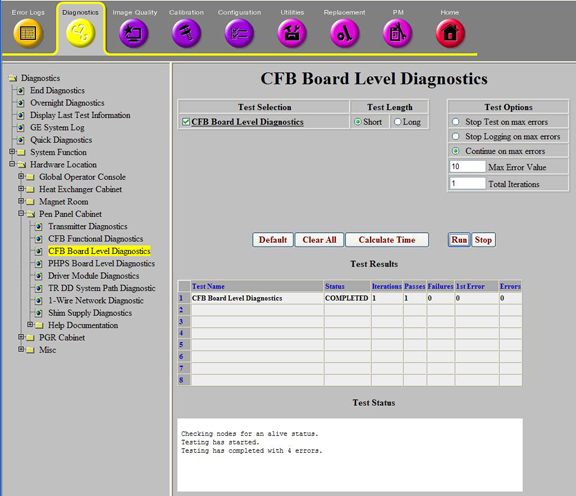

Operating Documentation
Direction 5670006, Rev# 1
Discovery MR750w GEM Service Methods
Module Version 7.0, Version Date 10/12/11
Operating Documentation |
Diagnostics >> System Function >> Patient Handling >> CFB Board Level Diagnostics
Diagnostics >> Hardware Location >> Pen Panel Cabinet >> CFB Board Level Diagnostics
Illustration 1: CFB Board Level Diagnostics

The purpose of this diagnostic is to test the CAN Fiber-optic Board (CFB).
This diagnostic forces a reset of the CFB that causes the CFB to perform a quick RAM test and a CRC check of FLASH memory. After power-up tests are complete the CFB checks for power OK signals from the Patient Handling Power Supply (PHPS). Two power supplies are checked: the table power supply and the magnet room power supply.
The CFB also checks that the Scan Room Interface (SRI) and RF Hub boards are connected and communicating to the CFB.
CFB
PHPS
SRI
RF Hub
This diagnostic is available from the Common Service Desktop when required system components are available.
A complete system is required. No special hardware or configurations are necessary.
For further information, refer to the Interactive Block Diagrams.
Select the CFB Board Level Diagnostics test.
Click [Run].
Ensure that the diagnostic passes by reviewing the status in the Test Results table.
Review the error log and corresponding extended error messages for subsequent actions. Additional responses to the diagnostic's results are as follows:
Table 1: Problem/Solution Table
| Result | Description | GE Field Action |
| Failed | Table power supply low | 1. Check connections. 2. Replace PHPS. |
| Failed | Magnet power supply low | 3. Check connections. 4. Replace PHPS. |
| Failed | RF Hub or SRI node ID not found error. | 5. Run the RF Hub or SRI <-> Loopback diagnostic. 6. Perform CFB Loopback Functional diagnostic. (Requires a fiber-optic loopback connector.) |
| Failed | CFB node not found | 7. Run CAN Link diagnostics. 8. Run PHPS BLD. |
| ||||
| Prior to scanning, a TPS reset is required. | ||||